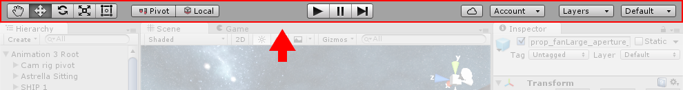

Learning the interface
Take your time to look over the editor interface and familiarize yourself with it. The main editor window is made up of tabbed windows which can be rearranged, grouped, detached and docked.
This means the look of the editor can be different from one project to the next, and one developer to the next, depending on personal preference and what type of work you are doing.
The default arrangement of windows gives you practical access to the the most common windows. If you are not yet familiar with the different windows in Unity, you can identify them by the name in the tab. The most common and useful windows are shown in their default positions, below:
The Project Window

The Project Window displays your library of assetsAny media or data that can be used in your game or project. An asset may come from a file created outside of Unity, such as a 3D model, an audio file or an image. You can also create some asset types in Unity, such as an Animator Controller, an Audio Mixer or a Render Texture. More info
See in Glossary that are available to use in your project. When you import assets into your project, they appear here.
Find out more about the Project Window.
The Scene View
The SceneA Scene contains the environments and menus of your game. Think of each unique Scene file as a unique level. In each Scene, you place your environments, obstacles, and decorations, essentially designing and building your game in pieces. More info
See in Glossary View allows you to visually navigate and edit your scene. The scene view can show a 3D or 2D perspective, depending on the type of project you are working on.
Find out more about the Scene ViewAn interactive view into the world you are creating. You use the Scene View to select and position scenery, characters, cameras, lights, and all other types of Game Object. More info
See in Glossary and the Game View.
The Hierarchy Window
The Hierarchy Window is a hierarchical text representation of every object in the scene. Each item in the scene has an entry in the hierarchy, so the two windows are inherently linked. The hierarchy reveals the structure of how objects are attached to one another. Find out more about the Hierarchy Window.
The Inspector Window
The InspectorA Unity window that displays information about the currently selected GameObject, Asset or Project Settings, alowing you to inspect and edit the values. More info
See in Glossary Window allows you to view and edit all the properties of the currently selected object. Because different types of objects have different sets of properties, the layout and contents of the inspector window will vary.
Find out more about the Inspector Window.
The Toolbar

The Toolbar provides access to the most essential working features. On the left it contains the basic tools for manipulating the scene view and the objects within it. In the centre are the play, pause and step controls. The buttons to the right give you access to your Unity Cloud Services and your Unity Account, followed by a layer visibility menu, and finally the editor layout menu (which provides some alternate layouts for the editor windows, and allows you to save your own custom layouts).
The toolbar is not a window, and is the only part of the Unity interface that you can’t rearrange.
Find out more about the ToolbarA row of buttons and basic controls at the top of the Unity Editor that allows you to interact with the Editor in various ways (e.g. scaling, translation). More info
See in Glossary.
Search Words: Vivandiere. A name for female service soldiers that accompanied the French army in the 18th–19th centuries. -Wikipedia
Did you find this page useful? Please give it a rating: